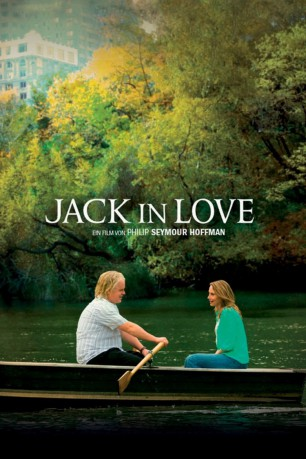
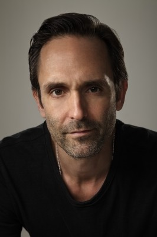

#3406 Jack in Love
Alternativ: Jack Goes Boating
 
 IMDB-Wertung: 6.4 / 10
IMDB-Wertung: 6.4 / 10  Metascore: 64
Metascore: 64 
Es ist Winter in New York, doch Jack, Chauffeur bei einem kleinen Limousinenservice, spürt bereits den Frühling. Sein bester Freund Clyde und dessen Frau Lucy haben ein Blind Date mit Lucys Kollegin arrangiert, das Anlass zur Hoffnung gibt. Doch erst muss Jack die ebenso scheue Connie erobern und dafür schwimmen und kochen lernen. Während sich hier sanft eine Beziehung anbahnt, droht sich eine andere explosiv aufzulösen. Denn die Ehe von Clyde und Lucy steckt, von Untreue und Eifersucht erschüttert, in einer schweren Krise.
Jahr: 2010
Dauer: 90 Minuten
FSK: 12
Land: USA Studio: Overture FilmsTonspuren: DTS - ,
Untertitel: Deutsch,
Auflösung: 1080p (1920x1040) Größe: 5365 MB
Genre: Drama, Liebe
Regisseur: Philip Seymour Hoffman
Drehbuch: Robert Glaudini, Robert Glaudini
Soundtrack: Grizzly Bear
Darsteller:
 Philip Seymour Hoffman als Jack
Philip Seymour Hoffman als Jack John Ortiz als Clyde
John Ortiz als Clyde- Richard Petrocelli als Uncle Frank
 Tom McCarthy als Dr. Bob Thomas
Tom McCarthy als Dr. Bob Thomas Amy Ryan als Connie
Amy Ryan als Connie- Daphne Rubin-Vega als Lucy
 Lola Glaudini als Italian Woman
Lola Glaudini als Italian Woman Stephen Adly Guirgis als MTA Worker
Stephen Adly Guirgis als MTA Worker- Mason Pettit als Drunk Man on Subway
-  Trevor Long als Waldorf Doorman
 Stephen Mailer als Happy Husband
Stephen Mailer als Happy Husband- Count Stovall als Men's Room Attendant
- Salvatore Inzerillo als Cannoli
 Elizabeth Rodriguez als Waldorf Event Assistant
Elizabeth Rodriguez als Waldorf Event Assistant- Byron West als Swimming Student
 Kevin Cannon als Downtown Guy , uncredited
Kevin Cannon als Downtown Guy , uncredited- Randy Clark als Student , uncredited
- Henning Fischer als Waldorf Event Assistant , uncredited
- Toshiko Onizawa als Woman at Train , uncredited
- Isaac Schinazi als Pastry Chef , uncredited
 Uzimann als Pedestrian , uncredited
Uzimann als Pedestrian , uncredited- Rafael Osorio als Ungainly Swimmer
- Elizabeth Rainer als Happy Wife
- Theodore Mailer als Young Son
- Beth Cole als Teacher
- Oliver Foot-E' als Swimming Teacher
- Shawna Bermender als Becky
- Cordell Stahl als MTA Orientation Leader
- Joseph Basile als Chef , uncredited
- Sharon Lee Levine als Nurse in Elevator , uncredited
- Paul Thornton als Chauffeur , uncredited
Datei: X:\2010(G-M)\Jack in Love (2010, FSK12, 1920x1040).mkv seit 01.04.2016
Festplatte: HD 2010(G-Z)-2011(A-F)
 Es gibt insgesamt 85 Filme in der Gruppe '2010(G-M)'
Es gibt insgesamt 85 Filme in der Gruppe '2010(G-M)'